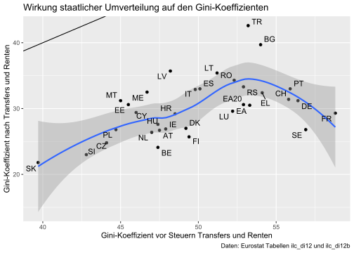

Anwendung: Klimaschutzpolitik und Gerechtigkeit
Bitte lesen Sie folgenden Text: Müller-Salo, Johannnes & Pritzl, Rupert: Gerechtigkeit und Effizienz in der Klimapolitik, in: Wirtschaftsdienst 101 (2021), S. 971-976.

Bitte beantworten Sie die folgenden Fragen:
Wofür benötigen Sie noch weitere Erläuterungen?
Welche Beziehung besteht nach diesem Text zwischen Effizienz und Gerechtigkeit?
In der Politik hat der Gerechtigkeitsgedanke vielleicht kein hinreichend großes Gewicht \(\rightarrow\) Fehlende Akzeptanz in der Bevölkerung
Ineffizienz führt zu vermeidbaren Gerechtigkeitsproblemen
Fehlende Technologieoffenheit – effiziente Technologien werden gar nicht ausprobiert/entdeckt
- Auf welcher Ebene wird die Verantwortung für Klimaschutzpolitik angesiedelt (Individuum, Kollektiv oder System?)
- Systemebene. Freiwillige Koordination der Staat
- Was sind die Schlussfolgerungen für die deutsche Klimaschutzpolitik und wie bewerten Sie diese?
Effizienz ist wichtig
Geduld und Vertrauen (Marathon, kein Sprint)
BürgerInnen nicht abhängen
Weniger Verbote, Technlologieoffenheit
Internationale Koordinierung